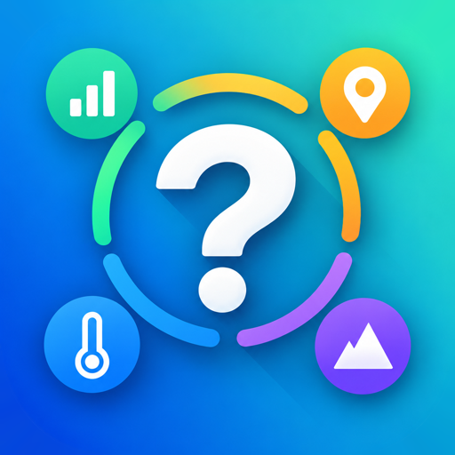
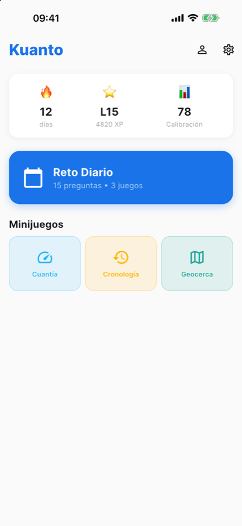
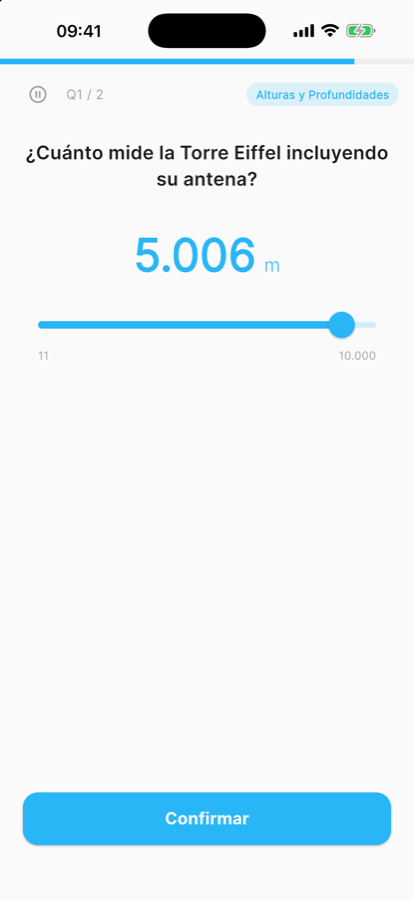
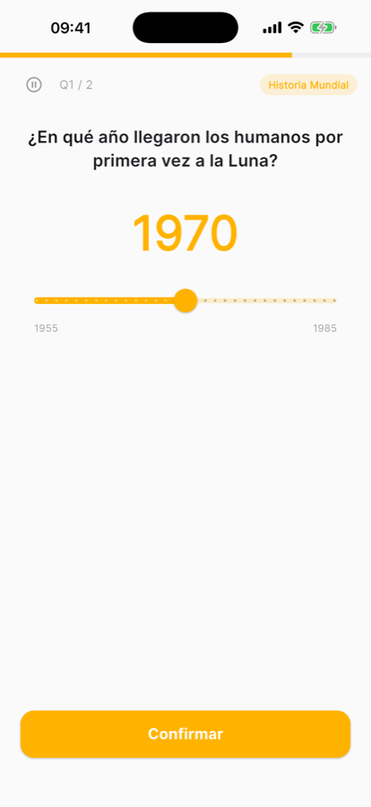
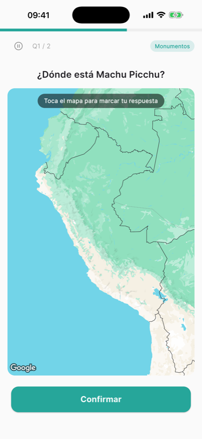
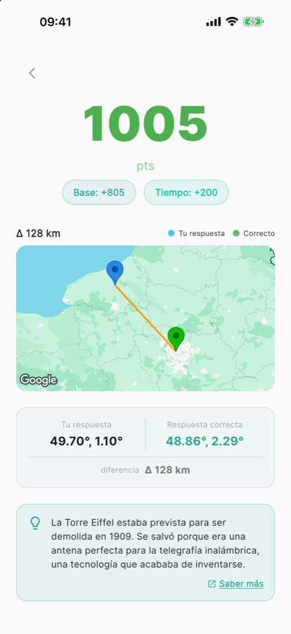
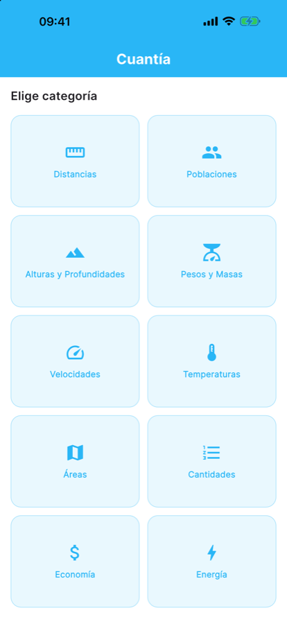

Kuanto
Adivina cifras, años y lugares del mundo real.
Próximamente en iOS y AndroidEn Kuanto no hace falta saber la respuesta exacta: haces tu mejor estimación y puntúas según lo cerca que te quedes. Cuanto menor es el error, más puntos.






Tres juegos
- Cuantía: estima cifras del mundo real con un deslizador: distancias, pesos, temperaturas, poblaciones, velocidades…
- Cronología: sitúa en la línea de tiempo inventos, nacimientos, marcas, obras y acontecimientos históricos.
- Geocerca: toca en un mapa sin etiquetas dónde está una capital, un monumento o una maravilla natural.
2.000 preguntas verificadas
Cada pregunta incluye un dato curioso y el enlace a su fuente, así que de cada ronda sales sabiendo algo nuevo.
Reto diario y progreso
15 preguntas nuevas cada día repartidas entre los tres juegos. Mantén tu racha, gana XP y sube de nivel para desbloquear categorías. Tu perfil guarda tus estadísticas, tu mejor puntuación y tu puntuación de calibración.
Gratis, sin anuncios y sin compras. Sin registro ni cuentas. En español e inglés, con modo oscuro. Geocerca necesita conexión a internet para cargar el mapa.